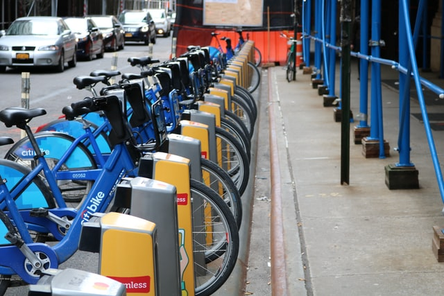

Portfolio
Welcome to the Art gallery, where art meets data. Being a Data Analyst its important to analyse datasets and excavate the hidden stories it is keeping within it. So here you can go through my analysis. Let's Explore!

Cyclistic-Case Study
With 1 year of riders dataset, Cyclistic bike share company wants to know how their two type of riders use their service.
Lets Explore →
Is ITC a fundamentaly strong company for Investors?
ITC have been a great discussion topic for Dalal Street. We will analyse the company quantitatively and qualitatively
Comming Soon →